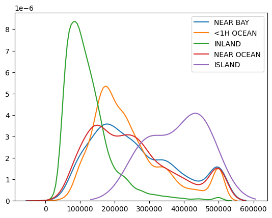

Generating PDF in Jupyter#
Generating reports directly from Jupyter can be done directly to PDF if LaTeX is installed. Otherwise, we can use the route of exporting HTML. Moreover, nbconvert --execute can be used to re-run the entire notebook for that clean and fresh look.
How To#
import pandas as pd
import seaborn as sns
df = pd.read_csv("data/housing.csv")
df.head()
| longitude | latitude | housing_median_age | total_rooms | total_bedrooms | population | households | median_income | median_house_value | ocean_proximity | |
|---|---|---|---|---|---|---|---|---|---|---|
| 0 | -122.23 | 37.88 | 41.0 | 880.0 | 129.0 | 322.0 | 126.0 | 8.3252 | 452600.0 | NEAR BAY |
| 1 | -122.22 | 37.86 | 21.0 | 7099.0 | 1106.0 | 2401.0 | 1138.0 | 8.3014 | 358500.0 | NEAR BAY |
| 2 | -122.24 | 37.85 | 52.0 | 1467.0 | 190.0 | 496.0 | 177.0 | 7.2574 | 352100.0 | NEAR BAY |
| 3 | -122.25 | 37.85 | 52.0 | 1274.0 | 235.0 | 558.0 | 219.0 | 5.6431 | 341300.0 | NEAR BAY |
| 4 | -122.25 | 37.85 | 52.0 | 1627.0 | 280.0 | 565.0 | 259.0 | 3.8462 | 342200.0 | NEAR BAY |
sns.pairplot(df.sample(1000))
<seaborn.axisgrid.PairGrid at 0x7f0b63bd9af0>

sns.pairplot(df.sample(1000).drop(["latitude",
"longitude",], axis=1),
hue="ocean_proximity")
<seaborn.axisgrid.PairGrid at 0x7f0b2bef1a30>
for cls in df.ocean_proximity.unique():
sns.kdeplot(df[df.ocean_proximity==cls].median_house_value, label=cls)

sns.jointplot("households", "total_bedrooms", df)
<seaborn.axisgrid.JointGrid at 0x7f0b296a3760>
sns.jointplot("population", "total_bedrooms", df, kind="reg")
<seaborn.axisgrid.JointGrid at 0x7f0b28fe0790>
sns.jointplot("households", "total_bedrooms", df, kind="reg")
<seaborn.axisgrid.JointGrid at 0x7f0b27c71c10>
sns.heatmap(df.corr(), square=True)
<AxesSubplot:>
sns.heatmap(df.corr().abs().round(1), square=True, annot=True)
<AxesSubplot:>
Exercise#
Explore the data further, maybe try a bar chart!